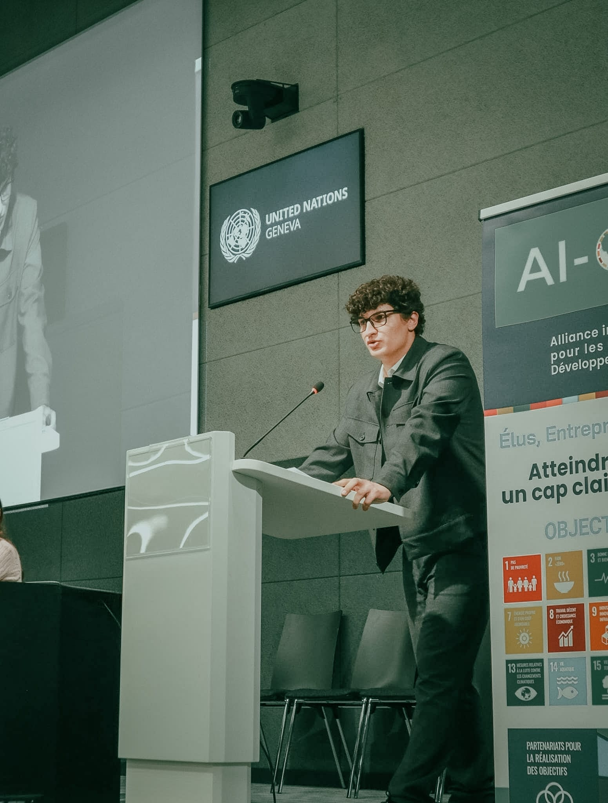
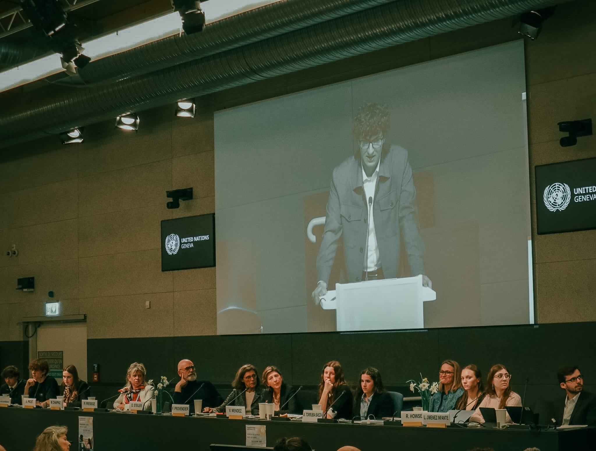
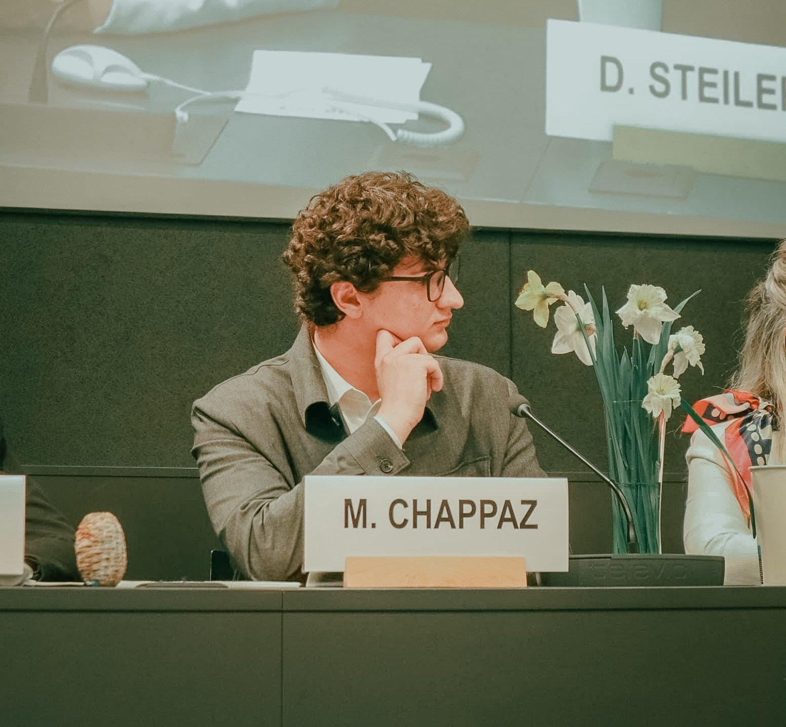
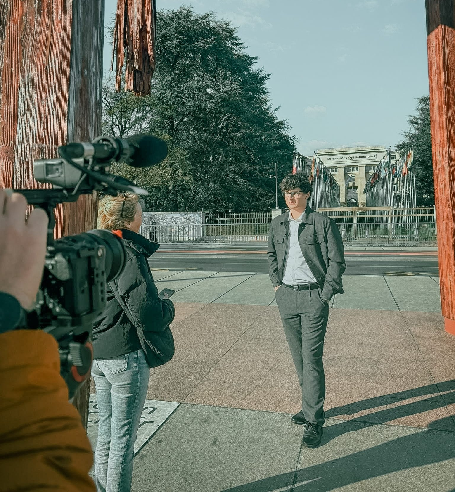
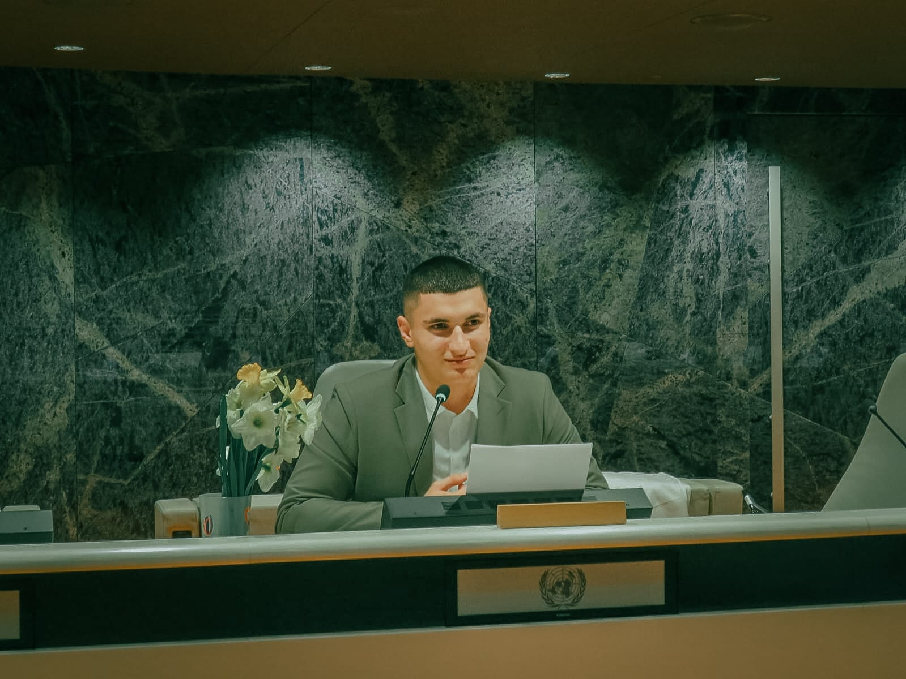
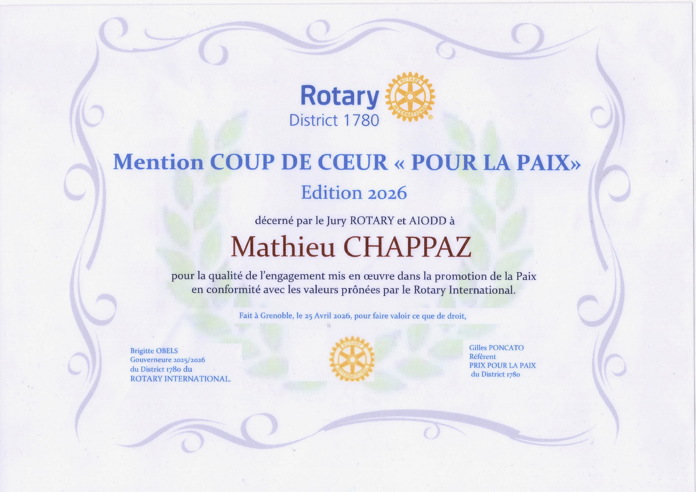

Portfolio · Mathieu Chappaz · 2026
Trop de projets.
Pas assez de temps.
Étudiant en école d'ingénieur en informatique. Comprendre les systèmes pour mieux les transformer.
Explorer →Une chaîne YouTube dédiée à l'analyse cinématographique et à la passion du 7e art.
Explorer →Du code comme matière première. Jeux vidéo, web, et tout ce qu'on peut construire avec une idée et un clavier.
Explorer →Orateur et représentant de la jeunesse à l'ONU. Porter la voix des nouvelles générations sur la scène internationale.
Explorer →
À propos
À 19 ans, je refuse de me laisser enfermer dans une seule case. J'aime avoir mille casquettes différentes et je trouve que la curiosité est souvent vue comme un défaut alors que c'est une des plus belles qualités. Ce portfolio est le reflet de cette énergie, de cette envie de tout explorer, de tout comprendre, de tout créer.
Envie de collaborer, de discuter d'un projet, ou simplement d'échanger ? Ma boîte mail est ouverte.
Étudiant en école d'ingénieur en informatique. Comprendre les systèmes complexes pour mieux les concevoir, les transformer et parfois les bousculer.
Le cursus ingénieur informatique me donne les bases solides pour comprendre les algorithmes, les architectures logicielles, les systèmes et les réseaux qui façonnent notre monde numérique.
L'ingénierie pour moi n'est pas que technique, c'est une façon de penser. Décomposer les problèmes, trouver des solutions élégantes, itérer. Une philosophie que j'applique bien au-delà du code.
Dev logiciel
Intelligence artificielle
Systèmes & réseaux
Cybersécurité
Architecture logicielle
Data & algorithmique
Le cinéma comme art total. Une chaîne YouTube dédiée à l'analyse, la critique et la passion du 7e art. Parce que les films méritent mieux que d'être un simple divertissement.
Ma chaîne est un espace de réflexion sur le cinéma : analyses de films, critiques approfondies, essais visuels. Un lieu où la passion rencontre la rigueur intellectuelle.
Le cinéma n'est pas qu'un divertissement, c'est un miroir de la société, un laboratoire d'émotions, un art qui synthétise tous les autres. C'est cette profondeur qui me fascine.
Les films qui racontent quelque chose de vrai, avec une voix unique et un point de vue affirmé.
L'histoire du cinéma comme fondation indispensable. Comprendre d'où l'on vient pour mieux voir où l'on va.
Suivre les nouvelles voix qui redéfinissent les codes et inventent le cinéma de demain.
Une analyse approfondie du rôle du réalisateur dans la création d'un film. En décortiquant les choix de mise en scène, de narration et de style, j'explore comment un réalisateur façonne l'expérience cinématographique.
Regarder la vidéoJeux vidéo, web, expérimentations. Coder c'est construire des mondes à partir de rien. Ça ne se résume pas à des lignes de code.
 🏆 1er de l'Académie de Grenoble
🏆 1er de l'Académie de GrenobleJeu indépendant et éducatif entièrement créé sur Godot. Premier de l'Académie de Grenoble aux Trophées NSI 2024.
Application mobile pour classer ses opinions via des top 3, avec liste de souhaits collaborative et section Évènements.
Un nouveau projet arrive bientôt. Reste connecté pour découvrir la prochaine création.
Des langages et frameworks qui servent les projets, pas l'inverse. Toujours en apprentissage, toujours en exploration de nouvelles technologies.
Coder pour moi c'est un acte créatif avant d'être technique. L'important c'est l'expérience finale, ce que ressent l'utilisateur quand il joue ou navigue.
Un jeu vidéo indépendant et éducatif entièrement conçu sur Godot. Premier de l'Académie de Grenoble au concours Les Trophées NSI 2024.
Hopaway Island est un jeu éducatif où le joueur doit résoudre des puzzles et relever des défis pour progresser sur l'île. L'objectif : rendre l'apprentissage accessible et fun à travers un univers coloré et intuitif.
Ce jeu est né d'une conviction : on apprend mieux en jouant. Conçu pour tous, enfants souhaitant apprendre en s'amusant ou adultes désireux de relever le challenge.
Entièrement développé sur Godot Engine avec GDScript. Gestion des niveaux, système de score, animations et logique de puzzle codés from scratch en plusieurs mois.
Game design, architecture de code, gestion de projet et présentation devant un jury national. Un projet qui m'a autant appris techniquement qu'humainement.


Un réseau social privé pour collecter, stocker et échanger ses opinions, souhaits et prochaines sorties.
Opinion permet aux utilisateurs de gérer leurs préférences sous forme de top 3. On peut aussi gérer une liste de souhaits que ses amis peuvent voir et exaucer. Plus de problèmes de cadeaux ou de manque d'infos sur les goûts de vos proches.
Né des conversations "quel est ton top 3 de couleurs préférées ?", on s'est rendu compte du besoin de stocker ces avis et de les faire évoluer avec ses amis, ainsi que de mieux communiquer ses envies.
Entièrement développé sur Flutter avec Dart. Création de l'interface utilisateur, gestion de la logique d'application et de la base de données Firebase.
Le développement d'une application mobile complète : conception UI, gestion de la base de données et intégration de fonctionnalités sociales. J'ai adoré interroger mon entourage pour comprendre leurs besoins.
Catégories
Top 3
Liste de souhaits
Orateur et représentant de la jeunesse aux Nations Unies. Porter les enjeux de ma génération face aux décideurs du monde entier.
Représentant de la jeunesse auprès des Nations Unies, j'interviens en tant qu'orateur pour défendre les positions et préoccupations de la jeune génération sur des enjeux globaux : climat, éducation, inégalités, diplomatie internationale.
Je crois que la jeunesse n'a pas à attendre 40 ans pour avoir une voix. L'ONU est l'une des scènes où cette voix peut résonner au niveau mondial. C'est une responsabilité que je prends très au sérieux.
Avril 2026
Journée internationale de la conscience et de la paix
Membre du comité de pilotage. Préparation et délivrance d'un discours sur les thèmes de la paix et de l'art. Représentation de la voix des jeunes face aux instances décisionnaires.
Remise des prix du Rotary
Lauréat du "Prix Coup De Cœur Pour La Paix" décerné par le jury Rotary. Préparation et délivrance d'un discours sur les thèmes de la paix et de l'art.
Avril 2025
Journée internationale de la conscience et de la paix
Préparation et délivrance d'un discours sur les thèmes de la paix, de l'humanisme et des médias.




Prononcé au Palais des Nations Unies de Genève lors de la Journée Internationale de la Conscience 2026, ce texte décrit un monde assombri par la haine, mais qui pourrait être illuminé par l'Art. Récompensé par une standing ovation.
Les oubliées, les silencieuses, les invisibles. Le féminisme mal compris, les agressions trop peu punies, la femme comme objet, son absence dans la préoccupation scientifique.
L'égalité est une dette, la paix est un combat vivant. Ce discours au ton satirique milite contre la fausse conscience et la hiérarchie des conflits. Standing ovation au Palais des Nations Unies.

Cliquer pour agrandirJe me tiens aujourd'hui devant vous,
Non pas comme un savant, un chef ou même un fou.
Je ne suis ni l'ingénieur, ni le politique en scène,
Juste une voix qui crie, une conscience sereine,
Un gardien du bon sens, un rempart contre l'oubli.
Pour que l'évidence vive, au moins ici.
En 2025, le nombre de conflits armés actifs dans le monde a atteint son plus haut niveau depuis la Seconde Guerre Mondiale, touchant plus de 2 milliards de personnes.
Les dépenses militaires mondiales ont franchi le seuil de deux-mille-cinq-cents milliards de dollars l'année dernière, alors que la faim et la détresse progressent à nouveau.
La haine est un commerce, la peur un gagne-pain,
On vend des munitions pour le repas de demain,
Le ciel se fait de plomb sous la fumée des usines,
Et la mort se propage dans nos eaux cristallines.
Le silence est un crime quand le canon résonne,
Quand la botte du fort sur le faible s'adonne,
On s'habitue au pire, au spectacle des décombres,
Devenant des spectateurs perdus parmi les ombres.
Le rire des enfants s'éteint sous les gravats,
Victimes désignées de nos tristes combats.
On dessine des frontières au scalpel sur la peau,
En oubliant qu'on porte le même drapeau.
Chaque jour, 15 000 enfants de moins de 5 ans meurent de causes qui pourraient être évitées ou soignées.
L'indifférence est l'arme la plus sûre du bourreau,
Elle polit les chaînes et prépare le couteau.
On regarde l'abîme en pensant qu'on est loin,
Mais le gouffre se creuse au creux de notre main.
Le temps n'est plus au doute, ni aux vains protocoles,
Quand la vie s'évapore et que l'espoir s'envole.
Nous marchons en aveugles au bord du précipice,
En laissant choisir qui sera le sacrifice.
Regardez ce crâne qui craque sous le cuir des rangers,
La carcasse s'écorche, dévorée par les cratères de fer.
Arrachez les rimes, regardez le rat qui ronge le visage,
Le ventre s'ouvre, déversant ses entrailles sur le carrelage.
Un père s'effondre, la gorge tranchée par la rumeur,
Laissant un trou béant que nul traité ne pourra réparer.
Le souffle s'est tu dans un sursaut de silence,
Une source s'épuise, laissant seule l'absence.
Ses yeux se sont clos sous un ciel de poussière,
Une âme qui s'efface, sans laisser de lumière.
Rien n'est plus froid que le rictus de la mort qui s'incruste,
La chair s'arrache, s'écorche, se farde de poussière injuste.
Ils crèvent par grappes dans le fracas des chars en marche,
Et nous marchons, hagards, sur les débris de leurs arches.
Les médias sont des vitrines aux vitres bien trop lisses,
Où l'on maquille en paix nos plus sombres vices.
On se croirait en 1984, dans ce règne du flou,
Où le mensonge est roi et nous rend tous fous.
They want to keep your eyes wide shut, far from the pain,
Turning every tragedy into a financial gain.
They want us to believe army is the path of glory,
But there is no honor in a bloody, hollow story.
We can say that this is the time for the apocalypse now,
Watching the innocent bleed and the guilty bow.
Évidemment que ce n'est pas le meilleur des mondes,
Quand la haine en chaque seconde nous inonde.
On envoie le fahrenheit 451 sur les témoignages,
Pour brûler la mémoire et censurer les images.
Mais l'art reste un phare, un moyen de s'instruire,
Quand tout le reste ne cherche qu'à nous détruire.
Art is the last bastion of the spirit, deep and true,
The only thing that belongs strictly to me and you.
To understand it, just come and see the raw scars,
People who die while looking at the stars,
The rockets and the full metal jackets.
Si l'on retire les drapeaux, les discours et les médailles,
Derrière le bruit des clairons et le fracas des batailles,
Il ne reste que des gamins de vingt ans envoyés mourir,
Pour des hommes en costumes qui n'enverront jamais leur fils périr.
C'est la vérité crue que l'art refuse de taire,
Le sacrifice des innocents pour une gloire de poussière.
Et si parmi les 12 hommes en colère, par hasard,
On était le 13ème homme à porter le regard ?
Celui qui refuse l'évidence et le verdict trop rapide,
Dans ce tribunal du monde au jugement insipide.
Car la condition humaine peut faire faire beaucoup de choses,
Comme transformer nos jardins en des fosses moroses.
Et comme d'habitude, à l'ouest rien de nouveau,
L'innocence s'évapore sous un ciel de caveau.
C'est le tombeau des lucioles, là où les lumières tombent,
Et l'on ne voit plus que le tracé des froides tombes.
Car c'est ici que s'arrête la zone d'intérêt,
Là où l'indifférence devient un sombre décret.
On nous pousse vers l'Alphaville et on s'y égare,
Dans cette ville de vide où s'éteint le regard.
Où le petit soldat, piégé par l'engrenage,
Laisse son futur au milieu du passage.
La photographie c'est la vérité et le cinéma,
C'est 24 fois la vérité par seconde dans ce schéma.
C'est notre manière d'être, notre musique, ces champ contrechamp,
C'est une âme qui s'écoute et qui va en marchant.
L'histoire est un scénario écrit par ceux qui ont survécu,
Mais l'art est le pouls de ceux que l'on a dépourvus.
Hier, nous luttions pour obtenir une conversation juste,
Aujourd'hui, nous en sommes réduits, dans cette nation,
À quémander, pour survivre, juste une conversation.
La charité est une œuvre, un acte de splendeur,
Plus grande que la liste de Schindler en sa grandeur.
Ces gens-là, les leaders, ce sont de vrais lions,
Ils sont les rois de la jungle, et tout comme les lions,
Ils ne vivent même pas dans la jungle.
Ces lions préfèrent la cage dorée de leurs propres ambitions.
Ils riraient avec Docteur Folamour devant le déclin,
Pendant que Le Dictateur prépare son vil dessein.
Mais la vie est belle si l'on garde le courage,
De créer de la beauté au milieu de l'orage.
Je me tiens devant vous, citoyen de la science et du rêve,
Pour que cette prise de conscience ne soit pas qu'une trêve.
En tant qu'étudiant, j'ai vu la beauté des nombres et des lois,
Mais j'ai appris que l'humain est le seul vrai choix.
L'ONU est notre cadre, fragile mais nécessaire,
L'art est notre souffle, puissant et millénaire.
Ne laissez pas les lions de salon dicter votre futur,
Ni les écrans lisses masquer la moindre déchirure.
Éduquez-vous par l'image, par le livre et le chant,
Car c'est là que bat le cœur, vibrant et attachant.
Maintenez le dialogue, même au bord du néant,
Pour que l'homme de demain reste un être géant.
Et souvenez-vous,
Tuer un homme pour défendre une idée,
Ce n'est pas défendre une idée,
C'est tuer un homme.
Clique sur un paragraphe pour afficher son annotation.
Annotation
Le texte écrit au complet est disponible ci-dessous.
N'hésitez pas à cliquer sur les paragraphes pour découvrir mon analyse linéaire de ce texte.
Messieurs... Bonjour,
Bienvenue dans ce grand spectacle annuel :
‘La condition de la femme’.
Installez-vous confortablement,
Éteignez vos consciences,
Et applaudissez bien fort,
Car ce soir, on va parler d’égalité...
Mais rassurez-vous : pas trop longtemps,
Faudrait quand même pas déranger l’ordre naturel des choses.
Parce que oui, tout va très bien.
Les femmes ont déjà le droit de voter,
Elles peuvent même travailler,
Incroyable progrès !
Alors, de quoi se plaignent-elles encore ?
On leur a donné un strapontin dans le train de l’Histoire,
Et voilà qu’elles réclament une vraie place assise.
Quelle ingratitude.
Le féminisme... Ce mot terroriste.
Prononcez-le à voix haute,
Et regardez trembler vos biceps tatoués.
Le féminisme, voyons...
Comme si hommes et femmes devaient être égaux !
Mais que deviendrait l’humanité,
Si un père changeait autant de couches qu’une mère ?
Si un PDG s’appelait Sophie plutôt que Jean-Pierre ?
Un cataclysme !
Les traditions s’effondreraient,
Les barbecues seraient menacés,
Et pire encore...
Il faudrait admettre que l’égalité n’est pas un cadeau,
Mais un droit.
Rassurez-vous, on a trouvé la solution :
On offre des roses le 8 mars.
Une fleur pour chaque injustice,
Et hop, problème réglé.
Et puis, il y a le viol.
Ah, ce mot qui gêne, qui gratte, qui dérange.
Mais heureusement, on a toujours une excuse sous la main.
‘Elle portait une jupe trop courte.’
Bien sûr ! Le tissu est coupable, pas l’agresseur.
‘Elle avait bu.’
Logique : un verre de vin efface la notion de consentement.
‘Elle n’a pas dit non assez fort.’
Évidemment, dès maintenant, un cri doit être validé par un huissier pour compter.
Soyons sérieux deux secondes :
Un viol reste un crime. Point.
Un viol est un meurtre,
À la seule différence qu’il laisse la victime en vie,
Mais la société préfère toujours interroger la vicme,
Jamais le bourreau.
Parce que c’est plus confortable d’accuser une robe,
Que d’accuser un homme.
Mais attention, ne soyons pas injustes :
La femme a quand même une place importante dans notre société...
Dans les publicités pour parfums, par exemple.
En arrière-plan d’un clip de rap,
Ou comme trophée qu’on affiche fièrement,
Jusqu’à ce qu’elle ait une ride de trop.
Oui, la femme est essentielle :
Pour décorer les panneaux,
Pour remplir les magazines,
Pour faire joli sur la photo de famille.
Mais réfléchir ? Décider ? Diriger ?
Oulah, minute papillon.
On l’écoute... Tant qu’elle ne parle pas trop fort.
Et la science ? Ah, la grande, la noble science,
Neutre, rigoureuse, impartiale...
Enfin, neutre... tant que neutre signifie ‘centré sur l’homme’.
Car depuis toujours, les cobayes idéaux s’appellent ‘Monsieur’.
Résultat : les femmes encaissent 90% d’effets secondaires en plus.
Mais chut, ce n’est pas grave,
Elles sont habituées à souffrir, paraît-il.
Et puis, quelle ironie délicieuse :
Le mot hystérie nous vient de ‘utérus’.
Comme si l’utérus gouvernait les nerfs.
Comme les émotions d’une femme ne sont qu’un spasme gynécologique.
L’hyperémèse gravidique ?
Ces nausées extrêmes de grossesse ?
Invisibles.
De toute façon, ce n’est pas assez glamour pour mériter un budget de recherche.
Bref, la science est universelle,
Mais son univers commence et finit avec le chromosome Y.
Alors voilà, Messieurs :
La femme a déjà tant obtenu,
Elle devrait presque nous dire merci.
Merci d’avoir le droit d’exister,
Merci d’être tolérée dans ce monde d’hommes.
Et surtout, merci de lui laisser le temps de sourire.
Mais non,
La vérité, c’est que nous ne lui avons rien donné,
Nous avons juste rendu, lentement ce qui lui appartenait déjà.
Alors, je vous pose la question :
Voulez-vous continuer à distribuer des fleurs en plastique,
À coller des hashtags sur vos profils numériques,
Et à applaudir des discours creux une fois par an ?
Ou bien voulez-vous, enfin,
Construire un monde où la condition de la femme
Ne sera plus un sujet de débat,
Mais une évidence gravée dans le réel,
Comme la gravité ou le besoin d’oxygène ?
Parce que l’égalité, ce n’est pas une option.
C’est une dette.
Et il est grand temps de payer la facture.
Messieurs, merci.
Clique sur un paragraphe pour afficher son annotation.
Annotation
Mesdames et Messieurs,
Honorables consciences bien installées,
Merci de me prêter une oreille attentive,
Même si, soyons honnêtes, elle restera peut-être sélective.
Après tout, ce n’est qu’un discours de plus,
Un parmi tant d’autres, un souffle dans l’abyssale indifférence,
Mais qu’importe : on est là pour la Journée de la Conscience
Ah, la conscience… cette flamme qu’on rallume une fois par an,
Comme un vieux cierge d’église qu’on allume en tremblotant.
Un jour pour se donner bonne mine,
Un jour pour s’indigner, se sentir concerné,
Un jour pour dire "ça suffit", avant d’oublier demain midi.
Un jour, c’est pratique :
Ça permet d’avoir l’air révolté, sans trop se fatiguer.
Comme un badge qu’on accroche sur le col,
Qui dit "Regardez, j’ai fait ma part !"
Puis on le range, bien à l’abri, jusqu’à l’année prochaine.
Mais heureusement, la nouvelle révolution est là !
On la porte dans nos poches, elle scintille à nos doigts,
Un appareil magique, un miroir aux alouettes,
Où l'on scande la paix... du bout des pouces.
Aujourd’hui, mes amis, on ne se bat plus avec des armes,
On se bat avec des hashtags.
On ne manifeste plus dans la rue,
On le fait dans nos stories, assis sur notre canapé.
Les guerres explosent, mais nous, on répond :
"Soutien total" ,"C'est horrible", "Pray for peace"
Un enfant meurt sous une bombe ?
Vite, une réaction en emoji.
Un peuple entier disparaît sous les ruines ?
Partageons une infographie mal recadrée.
Les morts s’empilent, les drames se succèdent,
Mais tant qu’on met un filtre et un #NeverAgain,
Tout ira bien, n’est-ce pas ?
On veut changer le monde ? Très bien.
Mais pas depuis notre écran OLED.
L'indignation numérique, c'est joli,
Mais tant qu’elle ne sort pas du digital,
Elle reste une illusion, un effet de mode.
La guerre parfois c'est comme un produit en vitrine
Un conflit bien marketé, bien emballé
Avec une couverture médiatique calibrée,
Des images chocs et des larmes a l'heure du dîner.
Un conflit pour exister, doit savoir captiver.
S'il est trop vieux il devient un détail de l'histoire,
S'il est trop lointain. Il devient un écho sans mémoire
Alors on trie, on sélectionne
On décide qui mérite l'indignation
Et qui restera dans l'ombre du silence.
Mais dites-moi. L'odeur du sang change telle selon la latitude ?
Les bombes ont-elles une préférence de longitude ?
Les guerres ont elles une hiérarchie,
Où est-ce simplement une question de géographie ?
Car voyez-vous, certaines guerres remplissent les places,
Elles s’habillent de drapeaux, elles résonnent dans les rues,
Elles deviennent des slogans, des symboles,
Elles ont droit aux projecteurs, aux discours, aux minutes de silence.
Mais d’autres n’ont pas cette chance.
Elles meurent dans un murmure,
Leurs victimes n’ont pas d’hashtag,
Leurs cadavres n’intéressent pas les caméras.
Les pleurs y sont étouffés,
Les massacres, classés sans suite.
Un enfant qui pleure sous une bombe,
Quelle que soit la terre sous ses pieds,
Pleure avec les mêmes larmes,
Hurle avec la même douleur,
Mais certains cris traversent les frontières,
Tandis que d’autres restent enfermés dans l’oubli.
Peut-être que la douleur a un drapeau,
Peut-être que la guerre a une hiérarchie,
Peut-être que certaines balles valent plus que d’autres.
Ou peut-être que la vérité, c’est que l’humanité a ses favoris.
Alors que faire ?
Critiquer, c'est bien, mais agir, c'est mieux.
Si la conscience est un muscle, il faut l’entraîner.
Pas juste l’exhiber une fois par an, comme un trophée en papier mâché.
Il faut l’exercer, la forger, la faire transpirer.
Car une conscience en bonne santé, ça ne reste pas assis,
Ça se lève, ça marche, ça bouge, ca agi.
Alors on peut :
Donner
Pas des likes, mais du temps,
Pas des mots, mais des gestes.
Parce qu’un ventre vide ne se nourrit pas d’indignation,
Parce qu’un cri de douleur ne se soigne pas avec un post engagé.
Donner, c’est être le bras tendu, pas l’œil attendri.
Éduquer
Pas avec des punchlines, mais des faits.
Parce que la vérité ne tient pas en 280 caractères,
Parce que comprendre, c’est déjà résister.
Un peuple qui sait,
Est un peuple qu’on ne manipule plus.
S’unir
Pas en silhouttes éparpillées, mais en force rassemblée.
Pas par habitude, mais par nécessité.
Car seul, on s’épuise, on murmure, on subit.
Mais ensemble, on résiste, on crie, on agit.
La paix ne vient pas d’une prière,
Ni d’un espoir lancé en l’air.
Elle naît des mains qui se serrent,
Des peuples qui refusent de se taire.
Et si vraiment on veut marquer l’Histoire,
Que notre passage ici laisse une empreinte,
Il ne faut pas juste être un spectateur de la paix,
Mais un acteur, un architecte, un bâtisseur.
Car au fond, la vraie question est simple :
Veut-on une conscience de façade,
Ou une paix véritable, durable, et incarnée ?
Parce que si la paix est un idéal, la conscience, elle, est un choix.
Un choix que nous devons faire dès aujourd’hui.
Alors oui, levons nos voix, mais surtout nos corps.
Que nos idées quittent l’écran,
Qu'elles s'ancrent en actes, en élans,
Qu'elles brûlent d'ardeur, qu'elles tracent un sillon,
Et que la paix soit plus qu’un décor,
Mais un combat, vivant et vibrant.
Merci.
Clique sur un paragraphe pour afficher son annotation.
Annotation